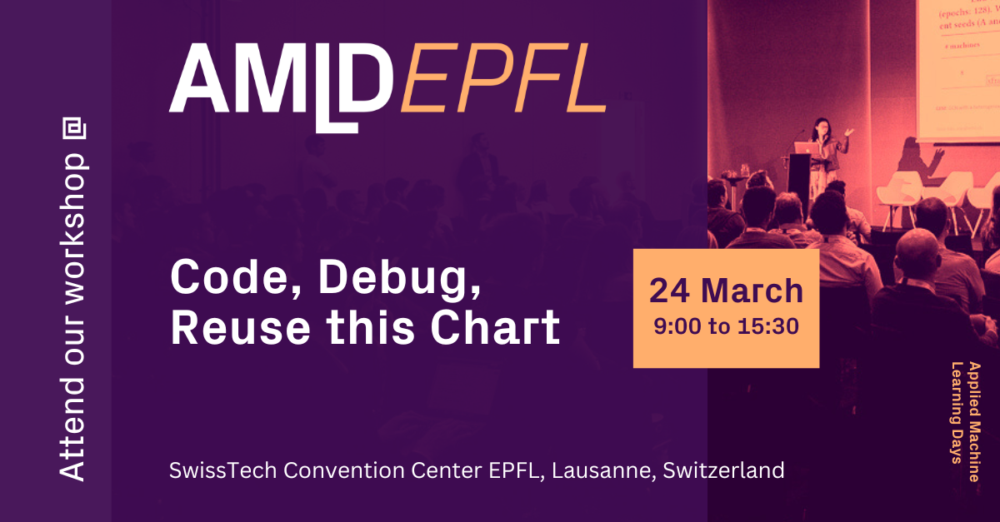

A home for “Code, debug, reuse this chart” workshop docs. The code is available on GitHub.
What is Matplotlib?#
Matplotlib is a huge plotting library. In March 2024, the project has 256024 lines of code.
~/d/matplotlib ❯❯❯ find . -name "*.py" -exec cat {} + | wc -l
256024
With approximately 1114 classes.
~/d/matplotlib ❯❯❯ find . -name "*.py" -exec grep -h '^\s*class\s\+' {} + | wc -l
1114
It’s a big and very flexible codebase for creating any plots. And with great power comes a bigger challenge: understanding how to use it effectively. But before we dive into the code, let’s ask ourselves a question:
Why do we need a workshop about matplotlib in the era of Large Language Models and ChatGPT?#
In the keynote titled “Training the most important model” at PyConTH 2023, Naomi Ceder made a point that our mental models of how code and applications work are vital to understanding the capabilities of our tools and fixing their problems when things go wrong.
At the “Code, debug, reuse this chart” workshop, Artem and Teresa will help you build the mental model of matplotlib. This workshop aims to provide insights and skills that LLMs cannot offer, such as understanding how to utilize matplotlib and organize Python visualization projects for re-usability.
After several attempts on making use of LLM for creating code for this tutorial, with an opinionated view, we could say that ChatGPT is very good in extrapolating words for matplotlib code generation. This often leads to a “spaghetti code.” The task of condensing the generated content by summarizing and optimizing was almost always failed causing the divergent results and change in the visual output. This makes us believe that there are still numerous opportunities for chart craftsmanship, and this tutorial should help you to get the necessary skills.
Setup#
Check out the Setup section for further information, including how to install the project.